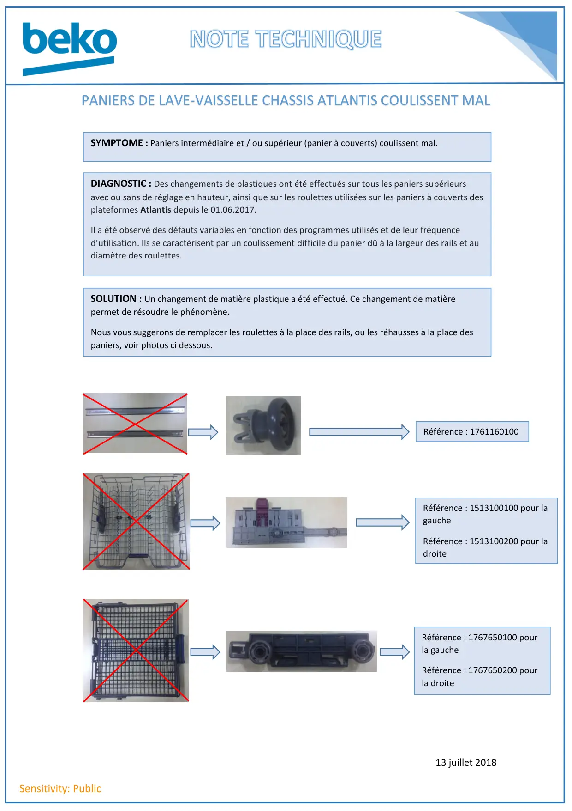

Note technique paniers lave vaisselle coulissent mal

13 juillet 2018Sensitivity: PublicPANIERS DE LAVE-VAISSELLE CHASSIS ATLANTIS COULISSENT MALSYMPTOME : Paniers intermédiaire et / ou supérieur (panier à couverts) coulissent mal.DIAGNOSTIC : Des changements de plastiques ont été effectués sur tous les paniers supérieursavec ou sans de réglage en hauteur, ainsi que sur les roulettes utilisées sur les paniers à couverts desplateformes Atlantis depuis le 01.06.2017.Il a été observé des défauts variables en fonction des programmes utilisés et de leur fréquenced’utilisation. Ils se caractérisent par un coulissement difficile du panier dû à la largeur des rails et audiamètre des roulettes.SOLUTION : Un changement de matière plastique a été effectué. Ce changement de matièrepermet de résoudre le phénomène.Nous vous suggerons de remplacer les roulettes à la place des rails, ou les réhausses à la place despaniers, voir photos ci dessous.Référence : 1761160100Référence : 1513100100 pour lagaucheRéférence : 1513100200 pour ladroiteRéférence : 1767650100 pourla gaucheRéférence : 1767650200 pourla droite
1 / 1